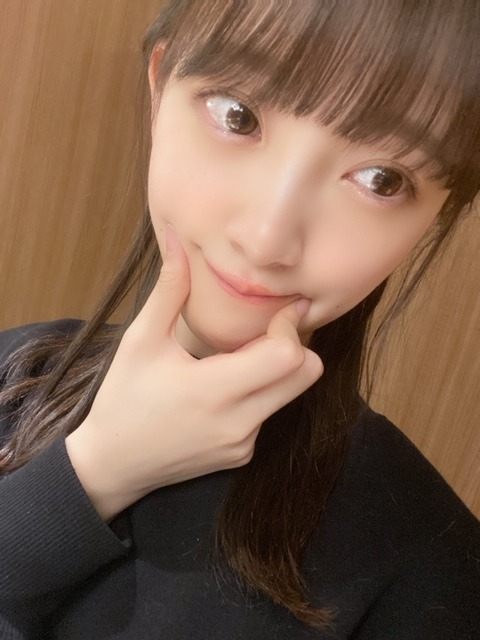
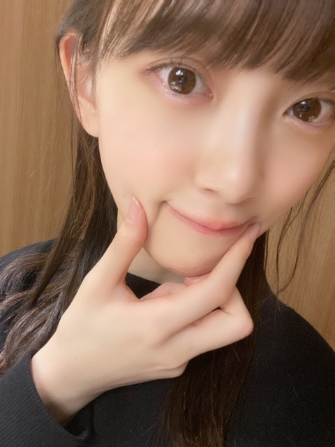
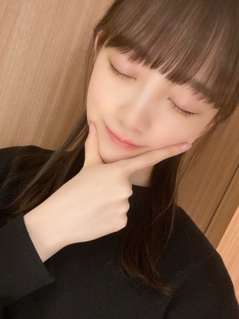
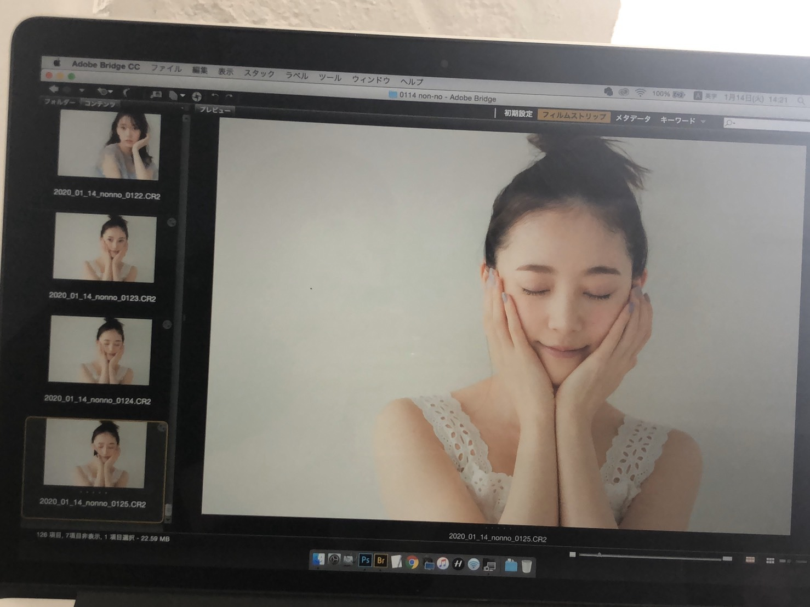
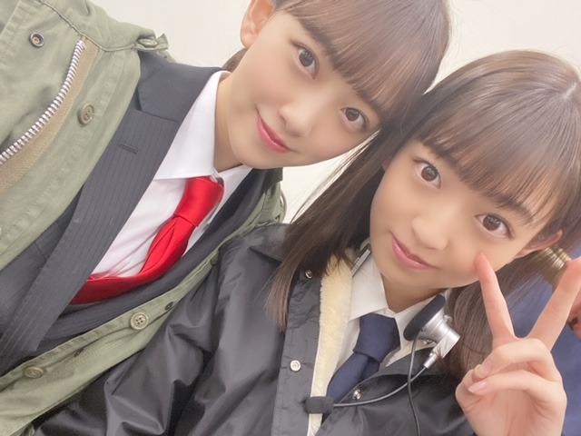
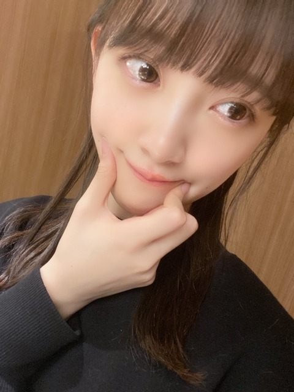
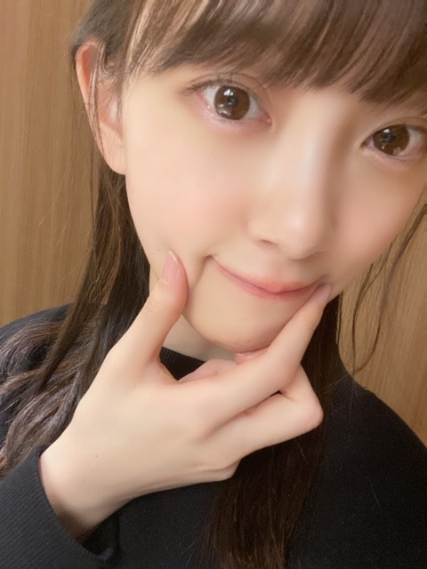
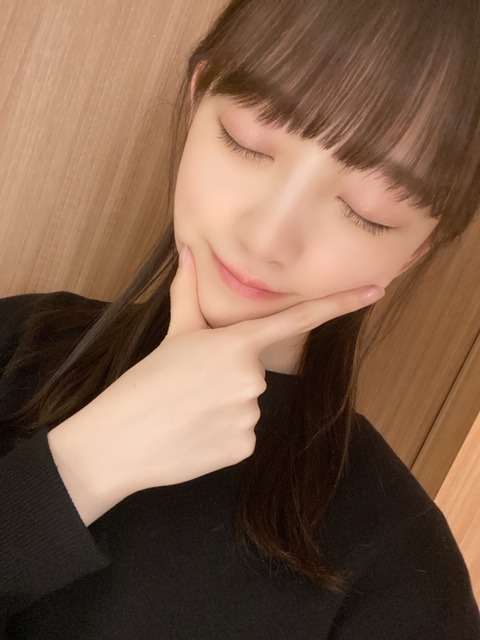
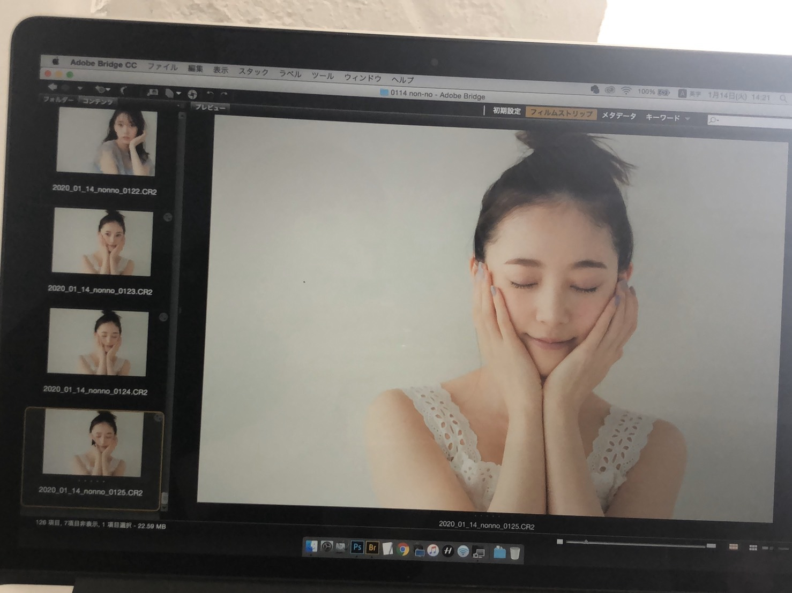
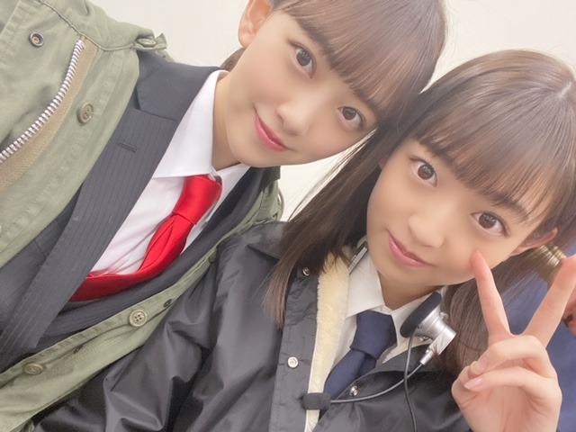

2020/0224Monひつまぶしひまつぶし



昨日はひつまぶしをたべたの！
今日はなんだろう〜
名古屋飯大好きです
味濃いの最高です
今日はバスラ最終日！
地元岐阜県に近い名古屋ドームで4日間もライブをさせていただけることがすごく有難いことですし嬉しいです。
全曲披露ということで199曲の中にたくさんの
思い出のある曲や大好きな曲、素敵な曲が詰まっていて1曲1曲気持ちを込めながら噛み締めながら披露させていただいています✨
自分が参加していない曲も好きな曲ばかり。
大人への近道、君に贈る花がない、threefoldchoice、嫉妬の権利、当たり障りのない話、バレッタ、ゴルゴンゾーラ、スカウトマン、そんなバカな、月の大きさ、かき氷の片想い、amiloving?
はセンターをやらせていただいた曲で特に思い入れがあるので無事披露することができて良かったです☺︎
今日はどの曲を披露するのか...！お楽しみに(^^)
発売中の、ノンノとar よろしくお願いします！
ノンノさんでは美肌特集によんでいただきました...♩
スキンケアや普段気をつけていることをたくさんお話ししたので、是非☺︎
オフショット〜


失恋お掃除人
も若さんに代わり昨年に引き続き、珠美、美月、梅ちゃんと一緒に披露させていただきました
伊藤衆人監督にもライブ用にmv風の素敵な映像を撮っていただいて☺︎
撮影中もみんなで真剣にふざけながら演じれて楽しかったな〜
笑っちゃいけないから笑いを我慢するのが大変でした。笑
梅ちゃんも美月も珠美もボソッと面白いこと言うから笑っちゃう。
あとは、みんな可愛いのに私の顔芸がなかなか酷くて笑いました。笑
ありがとうございました。
ではでは！
後ほど！名古屋ドームでお会いましょう〜！☺︎



昨日はひつまぶしをたべたの！
今日はなんだろう〜
名古屋飯大好きです
味濃いの最高です
今日はバスラ最終日！
地元岐阜県に近い名古屋ドームで4日間もライブをさせていただけることがすごく有難いことですし嬉しいです。
全曲披露ということで199曲の中にたくさんの
思い出のある曲や大好きな曲、素敵な曲が詰まっていて1曲1曲気持ちを込めながら噛み締めながら披露させていただいています✨
自分が参加していない曲も好きな曲ばかり。
大人への近道、君に贈る花がない、threefoldchoice、嫉妬の権利、当たり障りのない話、バレッタ、ゴルゴンゾーラ、スカウトマン、そんなバカな、月の大きさ、かき氷の片想い、amiloving?
はセンターをやらせていただいた曲で特に思い入れがあるので無事披露することができて良かったです☺︎
今日はどの曲を披露するのか...！お楽しみに(^^)
発売中の、ノンノとar よろしくお願いします！
ノンノさんでは美肌特集によんでいただきました...♩
スキンケアや普段気をつけていることをたくさんお話ししたので、是非☺︎
オフショット〜


失恋お掃除人
も若さんに代わり昨年に引き続き、珠美、美月、梅ちゃんと一緒に披露させていただきました
伊藤衆人監督にもライブ用にmv風の素敵な映像を撮っていただいて☺︎
撮影中もみんなで真剣にふざけながら演じれて楽しかったな〜
笑っちゃいけないから笑いを我慢するのが大変でした。笑
梅ちゃんも美月も珠美もボソッと面白いこと言うから笑っちゃう。
あとは、みんな可愛いのに私の顔芸がなかなか酷くて笑いました。笑
ありがとうございました。
ではでは！
後ほど！名古屋ドームでお会いましょう〜！☺︎
2020/02/24 11:40


コメント(317)
未央奈さんのセンター曲はどれも好きです
バスラ４日間お疲れ様でした
しっかり休んでくださいね
ブログありがとう☆
そして、バスラお疲れ様でした！！
今日は、仕事帰りに新宿でライビュ参戦だったけど、
しっかりとみおタオルにオレンジ×白サイで
全力応援したよー☆
楽しかった〜！！！！
最高だった〜！！！！
もう目がショボショボジョコビッチだよ〜笑
ってか、ブログのタイトル！
ダジャレは、あんまり好きじゃないんじゃなかったっけ？笑
昨日は、ひつまぶしと迷ったけど、結局、
安定の矢場とん、わらじとんかつのソース半々&豚汁を食べたよ
あと、岐阜の乃が美で食パンを買ったよ〜
乃が美のはなれ、岐阜店って何処にあるのかわかるかなぁ〜？笑
あと、駅でふるーつ大福も買ったよ〜♪
新幹線でのおやつ用に、ひとつだけ買ったんだけど、
てんちょうは、おやつ用に4つ買ったらしい。。笑笑
それでは、
今夜は、ゆっくりと休んでね☆
最高のライブをありがとう！！！！
しあわせの保護色
も良い感じの曲だったなぁ〜
スルメソングになりそうな予感☆
では、今度何処で会えるかなぁ〜？
tgcも行く予定だよ〜☆
では、またね！
おやすみおな〜♪
いい夢みおな〜☆
わたる⊿
バスラ４日間お疲れさまでした
まずは諸事情ある中での開催決定
につきまして
運営さま、スタッフさま
そして何よりもメンバーの皆さま
に心より感謝いたします
見事199曲の披露、感動いたしました
参加したメンバーが無事ライブを
完走出来たことに安堵しております
このライブを通じて
乃木坂46というグループの素晴らしさ
絆の強さ、一人ひとりの個性が
一人でも多くの人に伝わっていることを
願ってやみません
今後もまた、このような素晴らしい
ライブを体験出来ることを
楽しみにしています
本当にありがとうございました
特に失恋お掃除人最高でした笑
バスラお疲れ様です！！
センターに入る曲も増えたね！！
推しとしては嬉しい限りです！
失恋お掃除人♪
箸くんの後見人の堀ちゃん
がセンターに入って
若様も嬉しいだろうね〜！！
ひつまぶし美味しいよね〜
味噌カツも食べたいなぁ(笑)
オフショットも
ありがとう！！
しっかり体調も
整えてインフルとかも気をつけてね〜！
次回の更新も楽しみにしてるよ！
では！！
おやすみおな〜！！
１日お疲れ様！！
今年のバズラは、私の地元で開催だね！
(愛知県出身ですが、名古屋出身ではないです)
そして堀ちゃんの地元の岐阜にも近い！
今、私と同じ県にいると思うと嬉しいです
愛知県出身ではあるのに、名古屋メシを食べたことがないんだよね笑
ほとんど私の住んでいる市の近くしか行かないので。。。
だから今度名古屋に行く時には、堀ちゃんおすすめのひつまぶしを食べてみるね～
明日は最終日
まいやんとのラストバズラ
たっくさん楽しんで、まいやんとの素敵な思い出を作ってね
ではまた(*´∇｀*)
4日目ライブビューイングで先程までド〜厶にいるような感じで感動してました。
乃木坂４６ファンになれて本当に良かったと改めて思いましたし 今後も応援していきたいと、
思いました。｡◕‿◕｡
そして、200曲目 幸せの保護色 ほっこり する曲で思わず泣いてました。
感動をありがと〜(ﾉ◕ヮ◕)ﾉ*.✧
東京府中のライブビューイングすごい盛り上がったよ。
『あらかじめ語られるロマンス』をやってくれてありがとう。
あの教室良かったよ。
むしろ、全部良かったよ。髪型も凄く似合ってました。
ぐるっと一周した際に、髪をかき揚げた瞬間が一番好きでした。
バースデーライブ4日間、本当におつかれさま＼(≧▽≦)／
僕は3日目だけしか参加できなかったけど、ものすごく盛大なライブだったね。
メンバーたちの熱のこもったパフォーマンスや想いが窺えた
すごく楽しかったよ、ありがとうっ！
それから、ライブに参加した昨日の会場入り前の時間と今日ホテルをチェックアウトした後の時間を使って、ついでに名古屋と岐阜のあちこちを観光してきたよ。
JR岐阜駅の周辺、岐阜城のあたりまで見てきたけど、歴史関連のものや古い町並みなどが見られて楽しかった！
あと、中津川の苗木城跡も見てきたけど、景色が絶景で感動した
堀ちゃんの故郷、良いところだね☆
そうそう、今回の計画でいろいろ調べていて発見したんだけど、岐阜の和傘がすごく綺麗で、うちにも一本欲しいなって思った
ではでは、また。
ゆっくり休んでね。
バースデーライブ！お疲れ様～☺️☺️
昨日は一塁側の5階席から応援してました！
5階だけど眺め思ったより良くて最高でした！
肉眼では見れなかったけれど、参加出来るだけで幸せでしたし、私の大好きなサンエトの曲聞けたので嬉しかったです❤️
そして、今日は！
三塁側の女性エリアスタンド前の方の席で応援してました！
ステージに近くて最高でした！！
嬉しかったです☺️
私の間違えでなければ僕がいる場所を歌っているときにレスいただけました！
一生懸命、タオルとサイリウム振ってアピールしてよかった…！
未央奈を近くで拝めただけでも嬉しいのに、本当にありがとう❤️
可愛かった！
ポニーテール似合ってて可愛かった！
素敵な時間をありがとう！
名古屋まで来た甲斐がありました！
最高の思い出ですヽ(*´∀｀*)ﾉ
観れるだけでもすごく疲れたから、未央奈達はもっと疲れてるよね
本当にお疲れ様でした！
ゆっくり休んでね！
twitterの感じだと、神曲なのは間違いない。
シンクロとかインフルみたいなかっこいい感じではない。
サヨナラとか帰り道のような「卒業」って感じでもない。
しっとりし過ぎず、ポップ過ぎず。歌詞は明るい。初期の乃木坂感がある。
「やさしさなら間に合ってる感、ありがちな恋愛感がある」ってこの2曲全然違うし。
とにかく早く聴きたいです。
ライブに行って改めて乃木坂っていいなと思いました。いい曲ばっかで今日は何回も泣きました。メンバーのことを考えると余計に涙が出てきました。本当にありがとう。感謝してもしきれません。できることから支えていくつもりです。ずっとずっと応援し続けます。これからも坂を登り続けられるように一緒に頑張りましょう！
しばらくはしっかり疲れをとってください！
今日の締めの未央奈の言葉共感しました。
バスラ4日間毎日異なるセットリストでしたがどの日も差がなく、未央奈の曲も他メンバーの曲も全てが最高でした。
特にライブの生歌というものはその人の感情がよく伝わって感動や興奮に誘われました…
改めて卒業生が多いなという寂しさは感じたけど、その意志を受け継いだ頼もしいメンバーが今の乃木坂にはたくさんいると感じさせられたライブでした！
まだ2期生ライブもありますし、体調に気を付けて東京に帰ってください！これからもずっと応援してます！
やっぱり未央奈が一番ということは変わりません。
仕事もアイドルとしての未央奈が一番ということは変わんないんだけども、また演技やモデルの仕事も増やしていけるといいですね♪
おやすみおな～
生で見てもめちゃくちゃ可愛いかったよ
席がもう少し近かったら良かったけど
ライブ中ずっと未央奈ちゃんがどこにいるか探してしまった!(笑)
バスラの初日参戦しました。未央奈ちゃんを近くで見れて最高でした。良い思い出になりました。
これからも、応援し続けます。よろしくお願いします。
最後に真夏さんに振られた時に、やっぱり、いろいろなことを考えて、思ってやってるんだなぁって思ったよ。
今日は、まっちゅんが涙流すから、少し貰っちゃったよ。でも未央奈みたいに、グループ愛が強くて、いろいろ考えてやってるメンバーがいれば、まだまだ乃木坂って進んでいくグループって思ったよ。
バスラと、明治神宮は、やっぱり何か力があるなって思ったよ。初日から未央奈の、パフォーマンスを堪能して、最終日もライヴ神と、選抜曲で未央奈にパワーもらったよ。もう一列ずれてれば近くを通ってくれたんだけど、でも充分魅了されました。
2期生ライヴ当たってないのが凄く残念だけど、当たった人の為、2期生の為、乃木坂の為に、良いライヴを期待します。
ブログの更新ありがとうございます。
８ｔｈバスラ、無事完走、おめでとうございます。そして、おつかれさまでした。そして、今年もたくさんの感動ありがとうございました。
私は２日目に参戦したのですが、その日はまるで「未央奈デー」のごとく、たくさんの楽曲に参加、たっぷりと楽しませていただきました。
今年は生ちゃんやまいやんのスケジュールの関係で、発売順ではなく、すべての曲がいつ飛び出してもおかしくない状況。まるで全曲「イントロあてクイズ」のようでした。
考えてみれば、昨年は初日に参加、つまり「バレッタ」で満を持しての出番だったから、「あれ、今日はなかなか未央奈でてこないなぁ」と心配していました。でも、今年は、「そんなバカな」に始まり、「ゴルゴンゾーラ」あり、堀北コンビあり、最新の「路面電車」あり‥‥‥、たっぷりと楽しませていただきました。ありがとうございました。
２００曲全部が「乃木坂の宝物」です。
ナゴヤドーム＆名古屋めし、ありがとうございました。
『あらロマ』やってくれてありがとう。
8thのバスラ4日間お疲れ様でした( ＾∀＾)
遠く岡山から応援してたよ( ＾∀＾)
未央奈は二代目箸くんだからね( ＾∀＾)
いつかTVで箸芸を披露してくれる日をお待ちしてます( ＾∀＾)
次は2期生単独ライブですね、遠くて行けないけど応援してます( ＾∀＾)
バスラお疲れ様！
またコメントします！
ライブビューイング見ました。ポニーテールが可愛かったです。生バンドでのパフォーマンスが格好良くて、コーラスが加わったSingOutはとても豪華で感動しました。バンドはスタッフさん達役でコーラスはファン役っていう見方もできるななんて思いました。
新曲も披露して本当に盛沢山でしたね。何でか見終わったら口角上げる顔の筋肉が凄く疲れました。それで思ったのが、堀さんってアンコールの時に凄く美しくなりますよね。達成感が表れてるとかなのか理由は分かりませんが、特別に美しかったです。あと1thや2thを指摘されて8thも不安になる流れが面白かったです。
では、休める時間がどれだけ取れるのか分かりませんが、どうにか体力回復してから2期生ライブに向けて準備頑張ってくださいね。
左足の靴下だけ下がっちゃうくだり最高でした笑笑
俺も頑張るので未央奈も頑張ってください!
無理しない程度に！コロナウイルス流行ってるんで。
それでは。(^^)
Birthdayliveお疲れです。
1日目と4日目観させていただいたよ。
残念ながら失恋お掃除人は見れませんでした、残念。
でも堀ちゃんの曲、半分くらいは見れたんで満足してます。
昨日はアリーナの真ん中のステージの近くでで堀ちゃんを正面から見ることができました。
大きいカメラが邪魔だったけど（笑）
堀ちゃんばっかずっと見てたよ
ポニテありがとうございました、むちゃくちゃ可愛かったよ。
最後の堀ちゃんのバスラの感想も良かったよ、染みました。
新曲も良かったです！
またLIVE行くのを楽しみにしてます。
では
どうか二人に歌い継いで貰えますように。
やっぱりライブいいですね。
未央奈の、生のパフォーマンスは最高ですね。
普段の可愛いさからは想像出来ないオーラと圧を感じますよ。
これからも頑張ってね。
4日間お疲れさまでした〜
感動をありがとね〜
25thシングルいい曲ね〜
今日はゆっくり休んでね〜
タピオカでもべびたっぴしてね〜
((((((((((っ･ω･)っ ﾌﾞｰﾝ
((((((((((っ･ωΣ[柱]ｶﾞｺｯ! ⌒☺︎
バスラ４日間お疲れ様でした！
無事に終えることができ何よりです。
行けない組だったので
頑張って念を送ってました！
未央奈ちゃんがセンターの曲どれも見たかったなー。
円盤化楽しみにしてるね！(早いか。笑)
次は２期生ライブだね！
立て続けのライブで大変だと思うけど
頑張ってね！
(でも、あまり無理はしないでね。)
私は応援頑張るよー！！
ではでは～
僕は1,2,4日目の3日間参加させていただきました！
「楽しかったです」なんて言葉じゃ想いの量が足りないんですが…
それでもやっぱり堀ちゃんたちのおかげでこんなにも楽しい気持ちになれたので、少しでも伝えたいので言います(o^^o)
めっっっちゃくちゃ楽しかったです！！！
最高の時間をありがとうございました！！！
堀ちゃんも楽しめたでしょうか？
楽しませてもらった上に好きな人が楽しめていたらこんなに幸せなことはありません(o^^o)
4日間のライブ、200曲という曲数、間違いなく疲れていると思うので、身体をゆっくり休めてあげてください( ´ ▽ ` )
楽しく観ていただけの僕も体力残ってないですもん笑
明日は少しでも堀ちゃんがゆっくりできるといいなぁ、ライブの準備が大変だったと思うので、やりたかったことにちょっとずつ手を出していってください(o^^o)
1,2日目の感想は一つ前のブログに先走って書いちゃったので今日のことを( ´ ▽ ` )
今日はポニーテールでしたね！やっぱりめっちゃ可愛かったです！(o^^o)♩
空扉のときにピョンピョン跳ねてる楽しそうな笑顔の堀ちゃんと、左右に揺れてちょこちょこ見えるポニーテールの組み合わせが、なんだか妙に可愛くて愛おしくて素敵でした(*´ー｀*)
最後のMCでも、このブログや755、インスタでも言ってくれていた「曲の歌詞を噛み締めて」という言葉
今まではライブに参加すると「楽しい！可愛い！」とテンションが先行してしまっていましたが、堀ちゃんからの言葉を受けて、噛み締めるところは噛み締めてみました( ´ ▽ ` )
僕がいる場所、一つのフレーズというより曲全体の歌詞がいいですね、しんみりと考えさせられます( ´ ー ` )
羽根の記憶、「10年後の自分、その頃ちゃんと幸せなのかな 君と一緒にいて笑っていられたらいい」この辺りが凄く好きです(^^)
別れは必ずあるから、乃木坂のみんながこうなれたらいいなぁと思う日々です( ´ ー ` )
平行線、「交わらないから永遠なんだ」このフレーズがとても好きになりました、言い回しが素敵です(o^^o)
他にもたくさん心を熱くする歌詞があって、堀ちゃんが気付かせてくれました(*´ー｀*)
そして3日目の披露で聴けなかった「君に贈る花がない」を今日の帰りの新幹線で聴いてました、改めてめちゃくちゃ心を揺さぶられました…！
まずイントロが凄く魅力的で引き込まれて、切ない歌詞が個人的に胸にきます…
あえて勝手な曲解をしますが、恋愛じゃない受け取り方をしてもいいのかなと( ´ ー ` )
夢とか友達とか、そういう観点にも当てはめられる気がして、凄くいいです…(^^)
明日から乃木坂の曲もっとたくさん聴いて、もっと噛み締めていきます！
堀ちゃんも乃木坂の曲で好きなフレーズなどあったら紹介してもらえると嬉しいです(o^^o)
さて、長くなってしまいました…！
改めて4日間本当にお疲れ様でした！
ライブでの楽しさはもちろん、期ごとの団結力やグループとしての一体感、メンバーみんなが乃木坂のことを大好きな雰囲気など
たくさんの素敵なところを感じて、乃木坂のことをもっともっと好きになった4日間でした(o^^o)
8歳の誕生日おめでとうございます！
9年目、これまで以上に応援させてください！
たくさん支えてもらってるから、少しでも支えたい！
声を上げて熱を出して、これからも、全力で応援していきます！
どうぞ今後ともよろしくお願いします！(o^^o)
では！またコメントさせてくださいー！
バスラ4日間お疲れ様でした！
ライブに来られたファンに対し、最高のパフォーマンスを見せる事が出来たんではないかと思います。知り合いも感動してメチャ泣けたと言ってました。
僕はまだライブ1回も参加した事ありませんが、1回は参加してみたいですが、ファンの方達の迫力に耐えられるか微妙です
今回は岐阜に近い名古屋でしたが、今度は堀ちゃんの地元岐阜で開催されると良いですね
毎回色々な場所行っての仕事で大変だと思いますが、これからも頑張って下さい！
おはよう
バスラ完走お疲れさまでした
おじさんは感動いたしました
最後のまさかの200曲目
嬉しいサプライズでしたよ
4日間歌って踊って
大変だったメンバーからしたら
生ぬるいこと言ってんじゃねーよ！
って思うかもしれませんが
おじさんは
ずっと立ちっぱなしだったので
腰が悲鳴をあげてます
今日はマッサージに言って
のんびりと過ごそうと思います
じじくさいコメントになって
すいません
未央奈ちゃんも
ゆっくり休んでくださいね
バスラお疲れ様でした
盛り上がって楽しめたようですね
美味しいもの食べられて羨ましい～
肌が綺麗で瞳がうるうる
むぎゅの写真ありがとうございます
決めポーズもバッチリです
ノンノとar買いましたよ～
いつも応援しています(^_^)
最終日の最後の方、未央奈ちゃんのコメント感動したよ。
本当に乃木坂って最高のグループ、世界一のグループです！
僕は名古屋市民なので、名古屋を満喫してもらえたら嬉しいです！
未央奈ちゃん最高
たくさん感動しました(^o^)
僕も名古屋でひつまぶし食べました！
お茶漬けが１番☀️
会場のサイリウムの一体感に感動し、あの会場を飲み込むような皆さんのパフォーマンスに心をわしづかみにされ、終始涙が止まりませんでした。
アイドルに興味がなかった自分が、乃木坂を好きになって、今までの人生が何て狭い世界だったんだろうと思い知らされました。
またチャンスがあればコンサートに行きます！
あんなに素晴らしい４日間をありがとうございました！
ブログ更新ありがとう！
バスラお疲れ様でした！
全曲披露ってやっぱすごいね！
色んな思い出があるんだね！
乃木坂の曲はおれも好きな曲ばかりだよ
2年連続で失恋お掃除人やったんだ！
2期ライブ行けたら行くよ！
これからも応援してる！
がんばれー！
コメントする